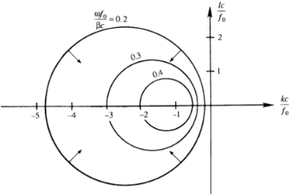

The arrows perpendicular to the constant-$\omega$ contours indicate directions of group velocity vector $\mathbf{c_g}$ $$ \mathbf{c_g} = e_x c_{gx} + e_y c_{gy} = e_x \frac{\partial \omega}{\partial k} + e_y \frac{\partial \omega}{\partial l} $$ which is the gradient of $\omega$ in the wave number space. The direction of $\mathbf{c_g}$ is therefore perpendicular to the $\omega$ contours

For $l = 0$, the maximum frequency and zero group speed are attained at $kc/f_0 = -1$, corresponding to $\omega_{\text{max}} f_0 / \beta c = 0.5$. The maximum frequency is much smaller than the Coriolis frequency.
For example, in the ocean the ratio $\omega_{\text{max}} / f_0 = 0.5\beta c / f_0^2$ is of order $0.1$ for the barotropic mode, and of order $0.001$ for a baroclinic mode, taking a typical mid-latitude value of $f_0 \sim 10^{-4}\,\text{s}^{-1}$, a barotropic gravity wave speed of $c \sim 200\ \text{m/s}$, and a baroclinic gravity wave speed of $c \sim 2\ \text{m/s}$. The shortest period of mid-latitude baroclinic Rossby waves in the ocean can therefore be more than a year.